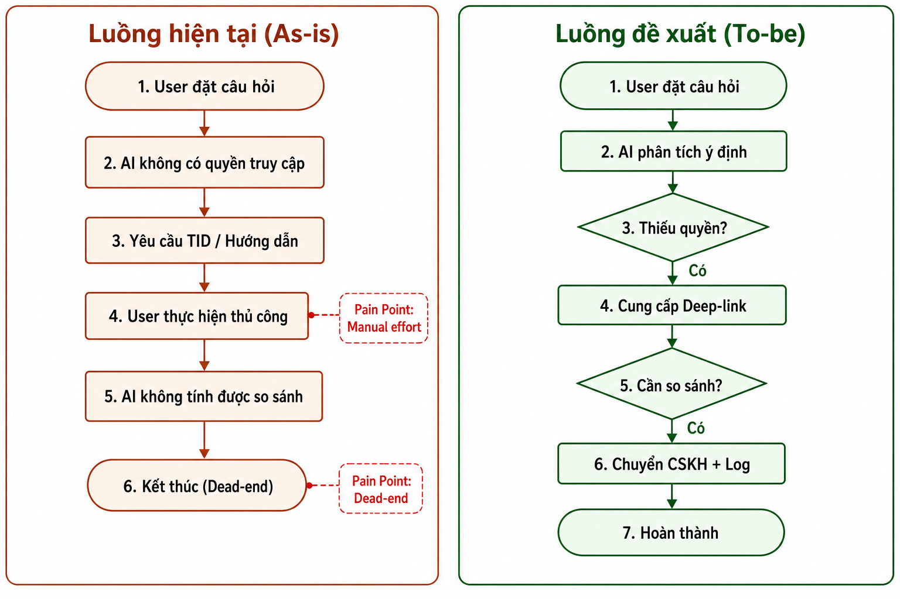
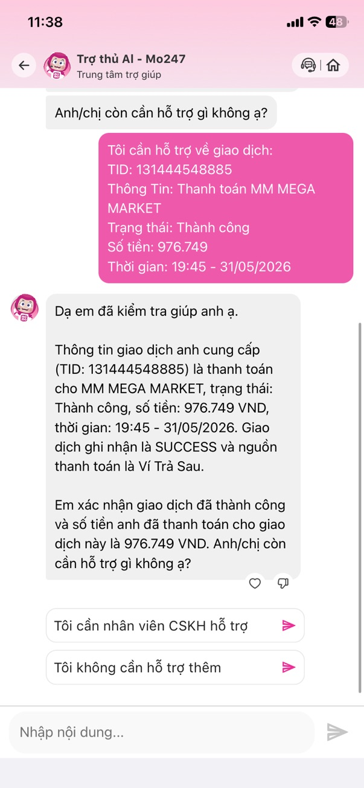

Báo cáo này tập trung vào việc phân tích các điểm nghẽn (pain points) trong trải nghiệm người dùng hiện tại và đề xuất giải pháp cải tiến thông qua luồng quy trình mới (To-be), nhằm chuyển đổi từ hệ thống hỗ trợ thụ động sang chủ động.
2. Sơ đồ Luồng (Flowchart)

Mô tả: Sơ đồ so sánh giữa luồng "As-is" (hiện tại) và luồng "To-be" (đề xuất).
3. So sánh Luồng thực hiện
Tiêu chí
Luồng hiện tại (As-is)
Luồng đề xuất (To-be)
Vai trò AI
Thụ động, hạn chế quyền
Chủ động, phân tích, dẫn dắt
Trải nghiệm
Thủ công, dễ tắc nghẽn
Tự động hóa, liền mạch (Deep-link)
Kết quả
Dễ gặp Dead-end
Giải quyết vấn đề triệt để
4. Hình ảnh minh chứng (Evidence)
Hội thoại với Trợ thủ AI - Mo247 minh họa pain point: AI yêu cầu TID thủ công, không tổng hợp được dữ liệu, không so sánh được giao dịch.

Chưa có ảnh. Lưu screenshot vào: evidence/evidence-1.png
Evidence 1: User hỏi tổng tiền thanh toán hóa đơn tháng trước — AI không tổng hợp được, yêu cầu TID hoặc chọn khoảng thời gian thủ công.
Chưa có ảnh. Lưu screenshot vào: evidence/evidence-2.png
Evidence 2: User tự cung cấp TID (131444548885) — AI chỉ xác nhận chi tiết 1 giao dịch, không trả lời câu hỏi ban đầu.
Chưa có ảnh. Lưu screenshot vào: evidence/evidence-3.png
Evidence 3: User hỏi so sánh với trung bình từ đầu năm — AI thừa nhận không tính được, đề xuất tự tra cứu hoặc chuyển CSKH.
Chưa có ảnh. Lưu screenshot vào: evidence/evidence-4.png
Evidence 4: AI đưa hướng dẫn 4 bước tra cứu lịch sử GD tại MM MEGA MARKET — gánh nặng thủ công cho user (Manual effort).
5. Giải pháp thực thi
Tích hợp hệ thống: Mở rộng quyền truy cập dữ liệu để AI có thể tự thực hiện thay vì yêu cầu người dùng thủ công.
Triển khai Deep-linking: Thay vì thông báo lỗi, AI tự động tạo đường dẫn đưa người dùng tới thẳng trang cần xử lý.
Hệ thống Handoff thông minh: Khi cần chuyển sang nhân viên CSKH, AI phải truyền kèm toàn bộ nhật ký hội thoại trước đó (Context Sharing) để nhân viên hiểu rõ vấn đề mà không cần khách hàng giải thích lại.
Nâng cấp khả năng suy luận: Huấn luyện AI nhận diện các tình huống so sánh dữ liệu thay vì từ chối thực hiện.